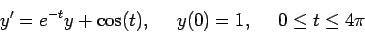
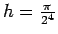
,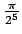
and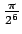
. Use 1, 2 and 3 terms in the Taylor series. For each Taylor series method, make a plot showing how the error decreases as h decreases. For each Taylor series method, estimate the number of accurate digits in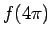
when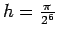
.
No problem. Here are graphs. I will post the maple functions and a diary of the commands that generated them.
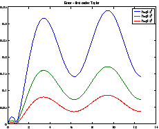
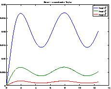
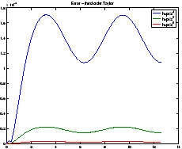
For the first order method, we would apply
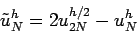
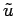
is the solution that has been improved via Richardson extrapolation. The improved solutions come out to be 3.4844... and 3.4811... which attains about 3 digits of accuracy. (If you compute a reference solution to a high precision, you will find that 3.48... is the first three correct digits.)
Though it is not required, it is worth writing about Richardson
extrapolation for the other Taylor methods. For the second order
method, the asymptotic error would be
E(T) h2 + O(h3). Thus, to
cancel the errors with two consecutive runs, we would apply
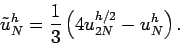
For the third order method, we would apply
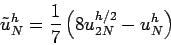
In general, for a
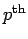
order method, the correct way to cancel the leading order error terms is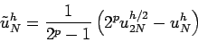
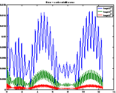
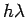
is close to zero.
Here, we are using a second order method, and the improved results are 3.47984... and 3.47993.... Because the method is better than the second order Taylor method, the Richardson extrapolation performs better.